El vicepresidente segundo y ministro de Economía y Hacienda , Rodrigo Rato , reconoció hoy que el Gobierno conocía " hace tiempo " los planes del BBVA y Telefónica de firmar una alianza estratégica , pero aseguró que no impulsó la operación.
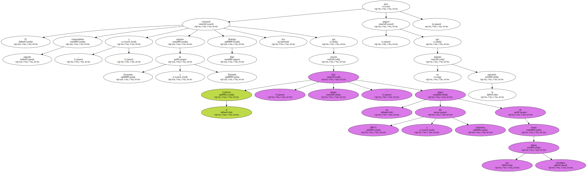En unas declaraciones a los periodistas antes de visitar la feria de arte Arco , Rato afirmó que , en contra de lo que sucedía durante la Presidencia de Felipe González , el Gobierno analiza todas las decisiones empresariales " bajo el prisma de la ley y , especialmente , bajo el prisma de la defensa de la competencia ".
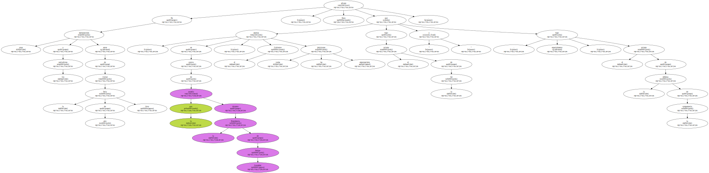" El presidente del Gobierno ( González ) recibía en su despacho y organizaba comidas con intermediarios para impulsar operaciones empresariales . Eso ya ha desaparecido " , afirmó el vicepresidente segundo.
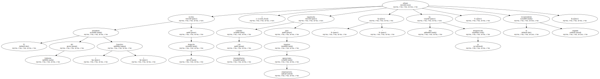" Ahora ya no existen intermediarios , ni amigos de los partidos que gobiernan , ni Filesas , ni consideraciones de otro tipo que afecten a las decisiones del Gobierno " , agregó.
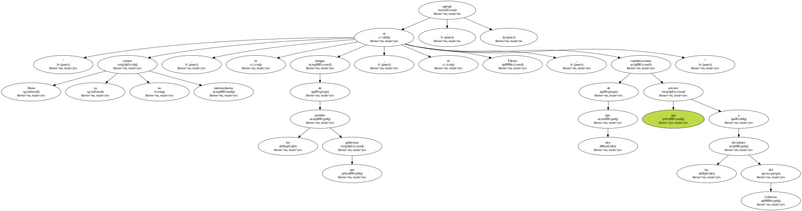Rato anunció que el Servicio de Defensa de la Competencia , dependiente del Ministerio de Economía y Hacienda , ha abierto un expediente informativo para determinar si la alianza BBVA-Telefónica cumple las normas del libre mercado y no perjudica a los consumidores , especialmente en los sectores del cable e internet.
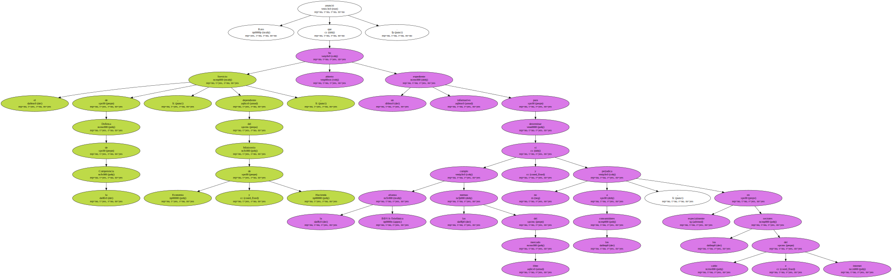A preguntas de los periodistas , Rato respondió a unas declaraciones efectuadas ayer por González , quien afirmó en Magaz del Pisuerga ( Palencia ) que la alianza BBVA-Telefónica " está diseñada por el poder político para llevarla adelante ".
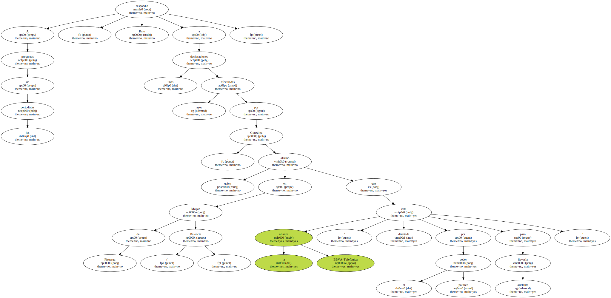" Creo que don Felipe González vive de su época " , dijo Rato.
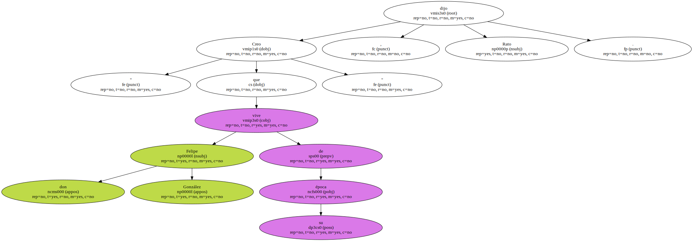" En su época , los empresarios tenían que pasar por Filesa , tenían que conseguir un intermediario que les consiguiera una comida con el propio señor González , nos encontrábamos con que los amigos del presidente estaban siempre en todas las operaciones y en algunos casos hemos tenido que vivir algunos escándalos especialmente desagradables sobre el tema ".
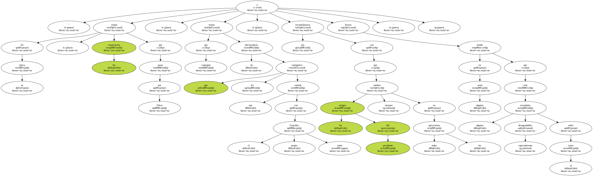El vicepresidente segundo aseguró que durante la etapa socialista en el Palacio de la Moncloa se podía vender durante una comida todo el sector del gas español , sin que hubiera un informe del Servicio de Defensa de la Competencia.

" Hoy el Gobierno defiende los intereses generales , defiende los intereses de los consumidores y garantiza que la ley se aplica a todos y , desde luego , los intermediarios y las Filesas han desaparecido de la vida económica y política española . Yo creo que el señor González es , simplemente , rehén de su tiempo " , dijo.
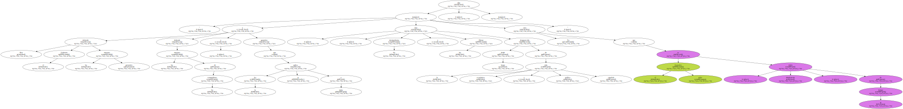En términos parecidos se pronunció hoy también el ministro de Trabajo , Manuel Pimentel , quien afirmó a los periodistas que González actúa de mala fe o desconoce profundamente el asunto.
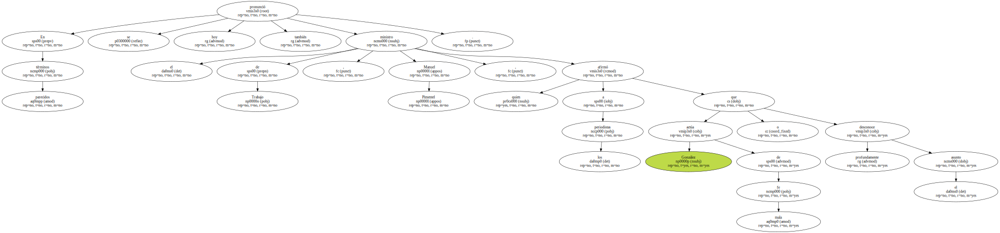El Gobierno , apuntó Pimentel , se ha enterado de la operación , pero no ha participado en la gestión del pacto entre el BBVA y Telefónica y lo que va a hacer ahora es estudiar si él mismo vulnera o no algún tipo de reglas de la competencia.

En declaraciones efectuadas hoy a la cadena SER , González negó que el presidente de Telefónica , Juan Villalonga , le diera a conocer el pacto con antelación y acusó al Gobierno de " intoxicar " para que la opinión pública crea que el presidente José María Aznar y Rato no están implicados en la operación.
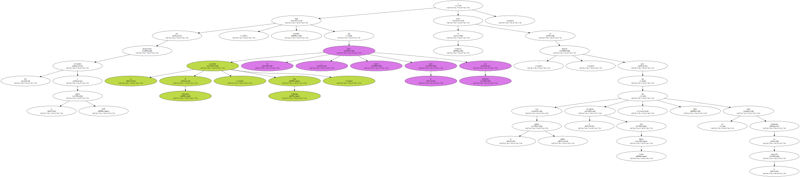En ese sentido , Rato afirmó que " de las conversaciones que nosotros conocemos , que se han podido realizar entre empresas en España , y algunas incluso con el propio señor González , sabemos todos los detalles ".
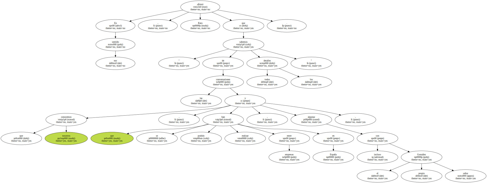" El señor González - añadió - es consciente de que sabemos todos los detalles , incluidos los que él mismo ha hablado sobre sí mismo " EFE.